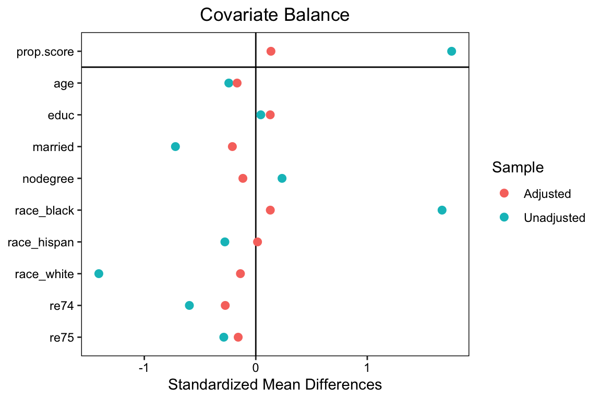
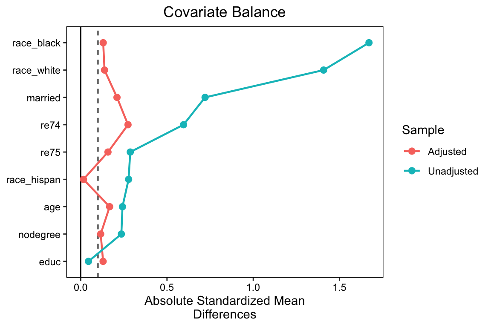
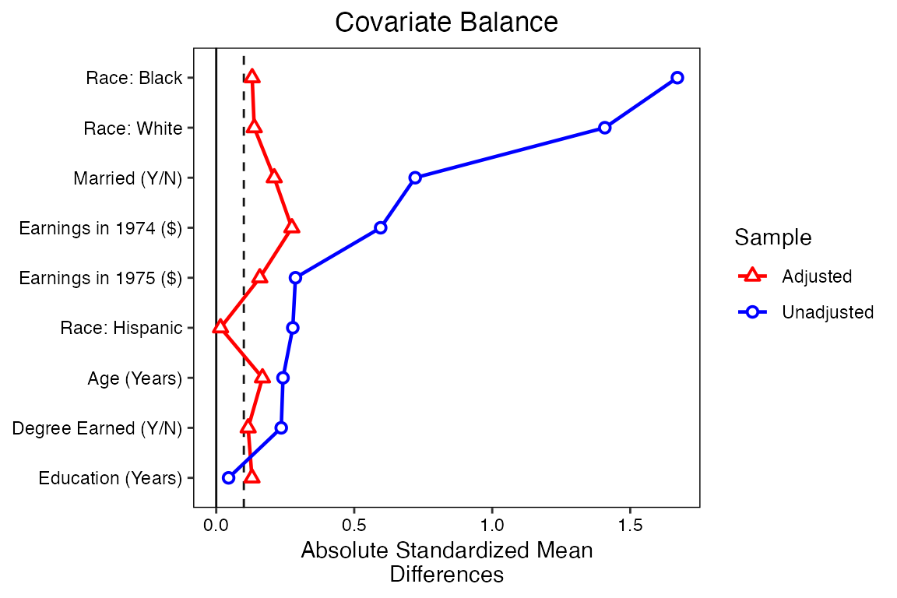
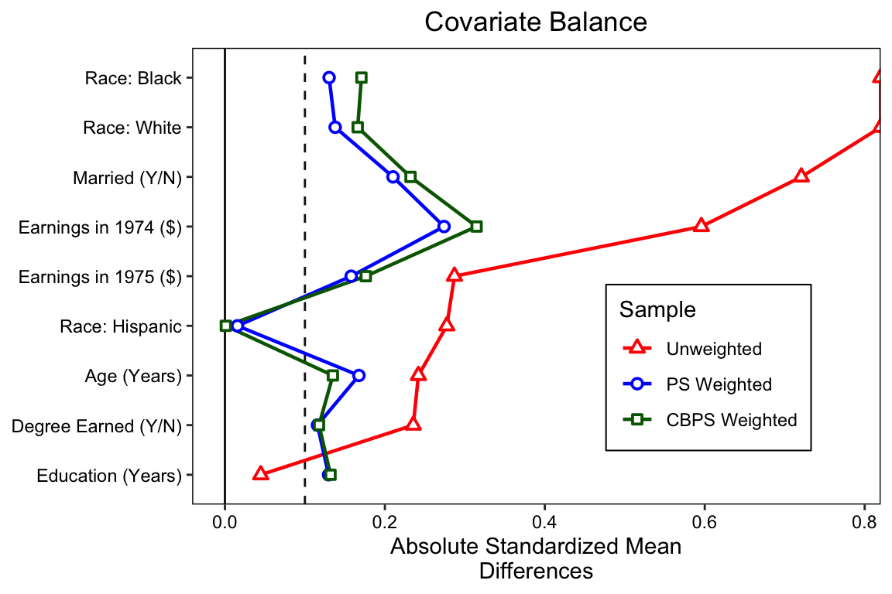
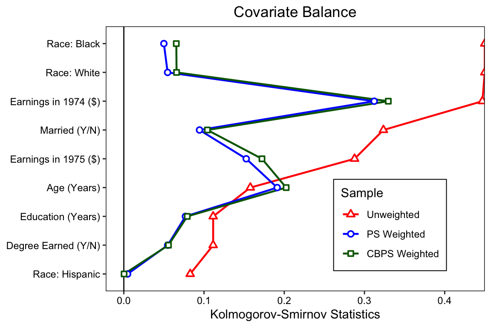
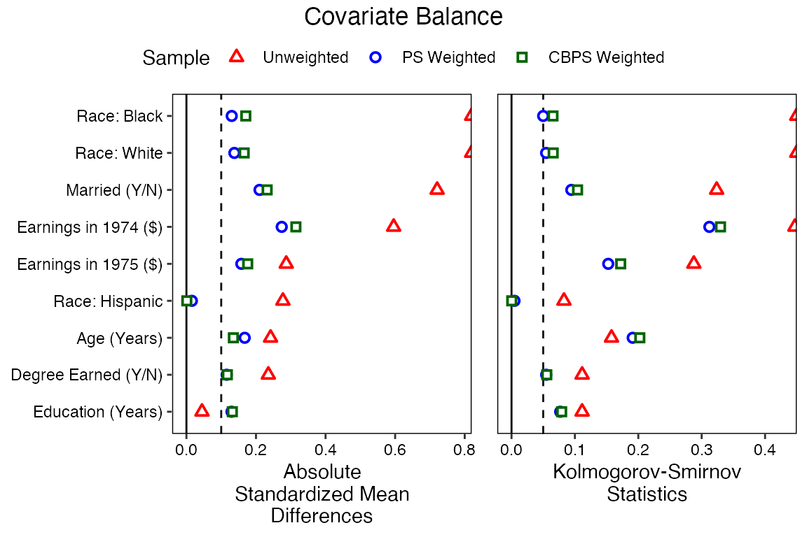
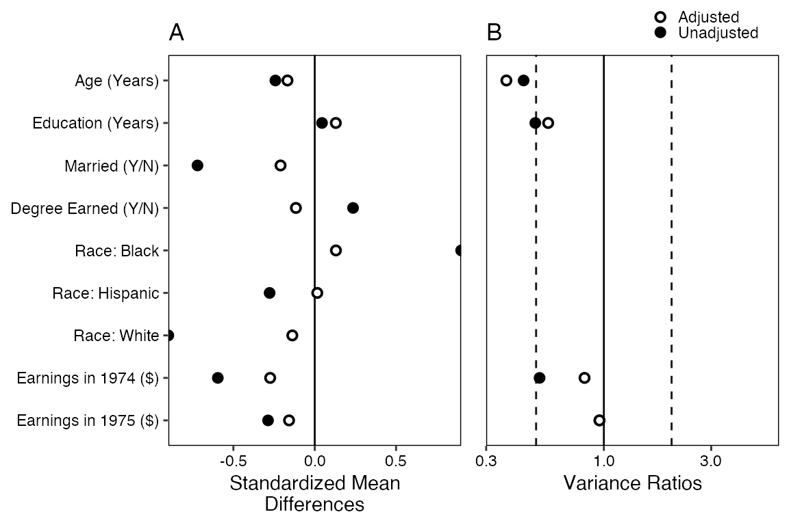
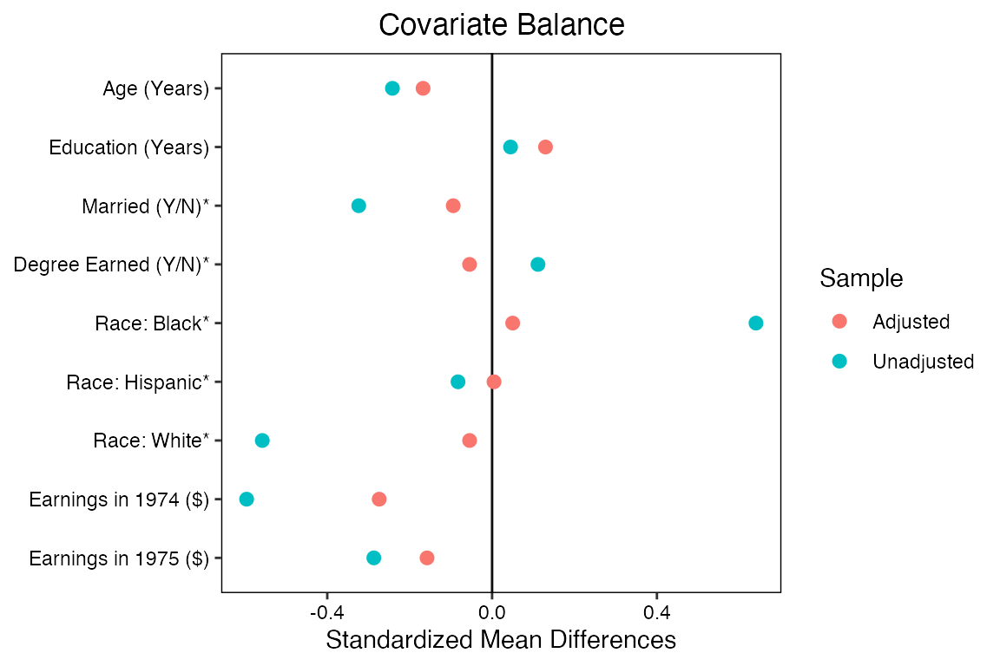

Appendix 4: Using love.plot To Generate Love Plots
Noah Greifer
2020-08-30
Source:vignettes/cobalt_A4_love.plot.Rmd
cobalt_A4_love.plot.RmdThis is a guide on how to use love.plot() to its fullest potential, taking advantage of all of its many options and features. Other vignettes have described the basics of love.plot(), but this guide goes more in depth. See the help file for love.plot() with ?love.plot for the full documentation.
This document will only go over the options for love.plot() with binary treatments. Many of the options apply to continuous and multi-category treatments and clustered and multiply imputed data as well. I’ll use the Lalonde data and WeightIt for all examples. WeightIt performs a variety of weighting methods, including propensity score weighting, which, for simplicity, will be the focus here.
First, let’s load in the data set and estimate the weights.
library(cobalt) data("lalonde", package = "cobalt") library(WeightIt) w.out1 <- weightit(treat ~ age + educ + married + nodegree + race + re74 + re75, data = lalonde, estimand = "ATE", method = "ps")
Next, because in this example we want to display standardized mean difference for all of the covariates, let’s set the global binary option to "std" so we don’t have to type it every time.
set.cobalt.options(binary = "std")
The most basic way to use love.plot() is simply to call it as you would bal.tab() on the output of the preprocessing function (in this case, weightit).
love.plot(w.out1)

We could also have supplied other arguments that would normally go in bal.tab()1:
#This produces the same output as the prior block but with #the additional covariates included in the formula. love.plot(treat ~ age + educ + married + nodegree + race + re74 + re75 + I(age^2) + I(educ^2), data = lalonde, weights = get.w(w.out1), method = "weighting", estimand = "ATE")
Let’s start with some basic customizations. First, we’ll remove the propensity score from the balance display by setting drop.distance = TRUE. We’ll change the order the covariates so they are displayed in descending order of their unadjusted mean differences by setting var.order = "unadjusted". We’ll display the absolute mean difference by setting abs = TRUE. We’ll also add some lines to make the change in balance clearer by setting line = TRUE. Finally, we’ll add a threshold line at 0.1 by setting thresholds = c(m = .1).
love.plot(w.out1, drop.distance = TRUE, var.order = "unadjusted", abs = TRUE, line = TRUE, thresholds = c(m = .1))

The plot is already looking much better and more informative, but let’s change a few things to make it more professional. First, we’ll change the names of the variables so they are easier to read. We can create a vector of new variable names and then supply that to the var.names argument in love.plot(). If it would be a burden to type out all the names, you can use the var.names() function to create a CSV file (i.e., spreadsheet) that can be customized and loaded back into R to be used with love.plot(). See ?var.names for more information. Because we only have a few variable names, we’ll just manually create a vector of names.
new.names <- c(age = "Age (Years)", educ = "Education (Years)", married = "Married (Y/N)", nodegree = "Degree Earned (Y/N)", race_white = "Race: White", race_black = "Race: Black", race_hispan = "Race: Hispanic", re74 = "Earnings in 1974 ($)", re75 = "Earnings in 1975 ($)" )
We’ll change the colors of the points and lines with the colors argument so they aren’t the ggplot2 defaults. We’ll also change the shape of the points to further clarify the different samples using the shapes argument.
love.plot(w.out1, drop.distance = TRUE, var.order = "unadjusted", abs = TRUE, line = TRUE, thresholds = c(m = .1), var.names = new.names, colors = c("red", "blue"), shapes = c("triangle filled", "circle filled"))

Finally, let’s makes some changed to the legend. First, we’ll rename the samples to be “Unweighted” and “PS Weighted” using the sample.names argument. Second, we’ll change the plot limits to give more padding on the right side using the limits argument. Third, to save some space, we’ll move the legend into the plot using the position argument, and we’ll give it a border. We can do this last step using ggplot2 syntax because the love.plot output is a ggplot object. We need to load in ggplot2 first to do this.
library(ggplot2) love.plot(w.out1, drop.distance = TRUE, var.order = "unadjusted", abs = TRUE, line = TRUE, thresholds = c(m = .1), var.names = new.names, colors = c("red", "blue"), shapes = c("triangle filled", "circle filled"), sample.names = c("Unweighted", "PS Weighted"), limits = c(0, .82), position = c(.75, .25)) + theme(legend.box.background = element_rect(), legend.box.margin = margin(1, 1, 1, 1))

This is starting to look like a publication-ready plot. There are still other options you can change, such as the title, subtitle, and axis names, some of which can be done using love.plot arguments and others which require ggplot2 code. Sizing the plot and making sure everything still looks good will be its own challenge, but that’s true of all plots in R.
Perhaps we want to display balance for a second set of weights, maybe using a different method to estimate them, like the covariate balancing propensity score (CBPS, Imai & Ratkovic, 2014) that is popular in political science. These can be easily added (but we’ll have to use the formula interface to set multiple weights).
w.out2 <- weightit(treat ~ age + educ + married + nodegree + race + re74 + re75, data = lalonde, estimand = "ATE", method = "cbps") love.plot(treat ~ age + educ + married + nodegree + race + re74 + re75, data = lalonde, estimand = "ATE", weights = list(w1 = get.w(w.out1), w2 = get.w(w.out2)), var.order = "unadjusted", abs = TRUE, line = TRUE, thresholds = c(m = .1), var.names = new.names, colors = c("red", "blue", "darkgreen"), shapes = c("triangle filled", "circle filled", "square filled"), sample.names = c("Unweighted", "PS Weighted", "CBPS Weighted"), limits = c(0, .82)) + theme(legend.position = c(.75, .3), legend.box.background = element_rect(), legend.box.margin = margin(1, 1, 1, 1))

We can see there is little benefit to using these weights over standard logistic regression weights, although significant imbalance remains for both sets of weights. (Try using entropy balancing by setting method = "ebal" in weightit() if you want to see the power of modern weighting methods.)
Perhaps balance on mean differences is not enough, and you want to display balance on KS statistics. In general, this is good practice; mean differences don’t tell the whole story. We can simply request stats = ks.statistics" in love.plot(). We could also request "variance.ratios" to get variance ratios, another potentially useful balance measure. Below we’ll use similar formatting to request KS statistics:
love.plot(treat ~ age + educ + married + nodegree + race + re74 + re75, data = lalonde, estimand = "ATE", stats = "ks.statistics", weights = list(w1 = get.w(w.out1), w2 = get.w(w.out2)), var.order = "unadjusted", abs = TRUE, line = TRUE, thresholds = c(m = .1), var.names = new.names, colors = c("red", "blue", "darkgreen"), shapes = c("triangle filled", "circle filled", "square filled"), sample.names = c("Unweighted", "PS Weighted", "CBPS Weighted"), limits = c(0, .45)) + theme(legend.position = c(.75, .25), legend.box.background = element_rect(), legend.box.margin = margin(1, 1, 1, 1))

Below, we’ll put two plots side-by-side, one for mean differences and one for KS statistics. This can be done by requesting multiple values for the stats argument (e.g., with stats = c("mean.diffs", "ks.statistics")). To reduce clutter, we’ll remove the lines by setting lines = FALSE. To prevent the axis titles from bumping into each other, we’ll set wrap = 20, where 20 is the number of characters at which to wrap to the next line. When stats has length greater than 1, the output is not longer a ggplot object and can’t be manipulated using ggplot2 syntax. This limits some of the options we have to customize it, but the available options using love.plot()’s syntax are still useful. We’ll move the legend to the top of the plot to save space using the position argument. We can give the plots different limits by entering a named list into the limits argument. We can do the same for the thresholds argument. Finally, by setting var.order = "unadjusted", we ensure that the variable order is the same in both plots (which it will be regardless) and ordered by the first balance statistic (in this case, mean differences).
love.plot(treat ~ age + educ + married + nodegree + race + re74 + re75, data = lalonde, estimand = "ATE", stats = c("mean.diffs", "ks.statistics"), weights = list(w1 = get.w(w.out1), w2 = get.w(w.out2)), var.order = "unadjusted", abs = TRUE, line = FALSE, thresholds = c(m = .1, ks = .05), var.names = new.names, colors = c("red", "blue", "darkgreen"), shapes = c("triangle filled", "circle filled", "square filled"), sample.names = c("Unweighted", "PS Weighted", "CBPS Weighted"), limits = list(m = c(0, .82), ks = c(0, .45)), wrap = 20, position = "top")

Below we recreate the plot in West et al. (2014), which uses a simple theme and avoids color, which can be important for publication. In addition, the plot has labels and puts the legend in a different position. We can include those features by including an argument to labels and by supplying a theme object to themes:
love.plot(w.out1, abs = FALSE, stats = c("mean.diffs", "variance.ratios"), drop.distance = TRUE, var.names = new.names, thresholds = c(v = 2), limits = list(m = c(-.9, .9), v = c(.3, 6)), shapes = c("circle filled", "circle"), position = "none", labels = TRUE, title = NULL, wrap = 20, themes = list(v = theme(legend.position = c(.75, 1.09), legend.title = element_blank(), legend.key.size = unit(.02, "npc"))))

When using love.plot, you might see a warning that says Standardized mean differences and raw mean differences are present in the same plot. Use the 'stars' argument to distinguish between them and appropriately label the x-axis.. We avoided this here by setting binary to "std" so that only standardized mean differences are produced when requesting stats = "mean.diffs". The stars argument adds an asterisk (or a character of your choice) to the names of variables that either have standardized mean difference or raw mean differences, whichever you choose. The idea is that the asterisk will be explain in a caption below the plot, indicating that the axis title doesn’t fully represent how that variable’s mean difference is displayed. For example, you might make the following plot:
love.plot(w.out1, binary = "raw", stars = "raw", drop.distance = TRUE, var.names = new.names)

By setting stars = "raw", asterisks appear next to the variables for which the raw difference in means (i.e., proportions) is displayed, contradicting the axis title. In the figure’s caption, you might write
* indicates variables for which the displayed value is the raw (unstandardized) difference in means.
This ensures readers can fully and accurately interpret the plot. My suggestion is to display standardized mean differences for all variables as well as KS statistics. The KS statistic for a binary variable is the raw difference in proportion, so that information is not lost.
References
Imai, K., & Ratkovic, M. (2014). Covariate balancing propensity score. Journal of the Royal Statistical Society: Series B (Statistical Methodology), 76(1), 243–263. https://doi.org/10.1111/rssb.12027
West, S. G., Cham, H., Thoemmes, F., Renneberg, B., Schulze, J., & Weiler, M. (2014). Propensity scores as a basis for equating groups: Basic principles and application in clinical treatment outcome research. Journal of Consulting and Clinical Psychology, 82(5), 906–919. https://doi.org/10.1037/a0036387
Older versions of
cobaltrequired the first argument to be a call tobal.tab(); this is no longer required and in fact is not recommended becauselove.plotis more flexible when handling its own inputs. That said,love.plotcallsbal.tabinternally, so problems that arise may be due to problems withbal.tabrather than withlove.plot. Sometimes thebal.tabobject can take some time to be produced, in which case it might be useful to just runbal.tabonce and supply its output to different calls oflove.plotas you fiddle with its options, asb <- bal.tab(w.out); love.plot(b). Note that doing so removes some oflove.plotflexibility. The most important aspect is thatlove.plotwhen called with the first syntax can modify the implicit call tobal.tabto get everything it needs. For example, normally variance ratios are not present inbal.taboutput, but if they are requested withstats = "variance.ratios"inlove.plot, they will be produced and displayed correctly without additional input. When using the latter syntax, an error will occur saying that variance ratios were not present in the originalbal.tabcall. This can be mitigated by settingquick = FALSEor including"variance.ratios"in thestatsargument in the call tobal.tabbefore entering its output intolove.plot.↩︎